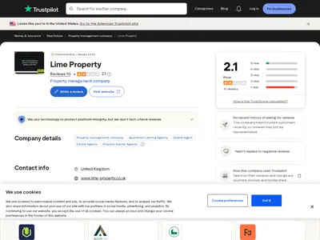
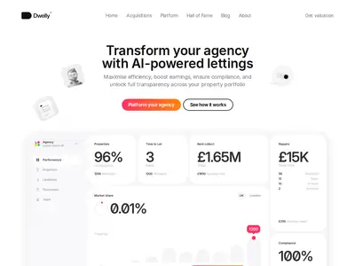
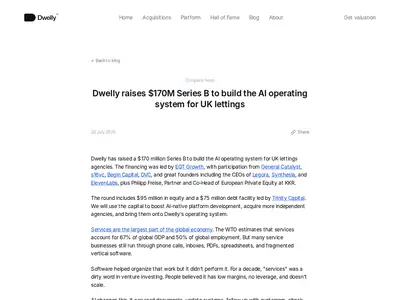
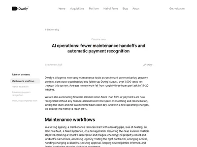

Реестр рисков
Риски модели Dwelly сведены в одну таблицу: что уже видно в открытых данных, по какому признаку риск можно заметить заранее и насколько он подтверждён. Подтверждённость высокая, если факт виден в реестре или двух независимых источниках; средняя, если источник один или выборка мала; низкая, если риск выведен из слов компании или по аналогии с другими компаниями.
| Риск | Что видно | Признак, по которому его заметить | Насколько подтверждено |
|---|---|---|---|
| Отток собственников после покупки | Dwelly его не раскрывает. Объявлений брендов на Rightmove 632 при портфеле 16 368, то есть 3,9% (расчёт)29. У Vacasa после централизации ушло 27% объектов за 2,3 года15 | число объявлений бренда на Rightmove падает больше чем на 10% за два месяца без сезонной причины; отзывы собственников «ушёл к другому агенту» | низкая: прямых данных нет, только аналогия и косвенные признаки |
| Падение сервиса после перевода на платформу | Lime: 2,1 на Trustpilot, 9 из 10 отзывов на 1–2 звезды, компания на негатив не отвечает7. В Google Maps оценки упали у HC Lettings, Settio, Eden Harper и Brookdale | новые отзывы на 1–2 звезды с темами «чат», «нет человека», «текучка»; рейтинг бренда ниже, чем до сделки | средняя: тенденция видна у нескольких брендов, выборки маленькие |
| Затянутая интеграция | Обещано «under 3 months» — «меньше трёх месяцев»2. Goodwin, AP Morgan и Settio через 4–8 месяцев после сделки принимают заявки через Fixflo, у Goodwin звонки принимает внешний колл-центр Moneypenny | на сайте бренда остаются старые формы заявок и телефоны; появляются вакансии на интеграцию и запуск | средняя: снимок сайтов брендов на 23.09.2026 |
| Слияние брендов вопреки обещанию | AP Morgan Lettings на Rightmove выступает как «SBK Lettings, Redditch». Albery Tyson в Google Maps помечена «permanently closed», портфель объединён с SBK | бренд исчезает с Hall of Fame, профиль на Rightmove переименован или снят | средняя: два случая |
| Уход продавцов и ключевых людей купленных агентств | Продавцы выходят из директоров в день закрытия, из пяти первых владельцев остался один8 | смена директоров в реестре купленной компании; отзывы с темой «текучка» | высокая для директоров (реестр), средняя для персонала |
| Цена и зависимость от долга | Ставка не ниже 12,2% плюс 2% в конце срока, залог на купленные компании. На 30.06.2026 взято $13,8 млн9 | в отчёте Trinity 10-Q растёт взятый долг или справедливая стоимость займа падает ниже номинала; новый залог в реестре | высокая: отчёт кредитора и реестр |
| Убыточность и зависимость от новых раундов | Убыток £3,73 млн за 2025 год, накопленный убыток £4,27 млн10. Цель EBITDA 35–40% названа только в подкасте22 | подача SH01 (выпуск акций) в реестре; следующий раунд или его отсутствие при росте долга | высокая для убытка, низкая для целевой маржи |
| Ключевые люди Dwelly | Продуктом занимается «development team is a team of 5, a few analysts, and one product designer»26. Поток сделок ведёт глава M&A Сэм Хамфрис, бывший продавец агентства21. Роль сооснователя Лифшица менялась: COO в 2024–2025 годах, CPO в 2026 году | смена директоров и PSC в реестре; уход руководителя M&A или разработки; вакансии на эти роли | низкая (гипотеза): уходов не видно, видна концентрация функций на малом числе людей |
| Ошибки автоматизации | 17.09.2026 ошибка развёртывания создала 200 лишних заявок на продление газовых сертификатов, заявки отменили и отправили извинения31. Правило о мойке окон не срабатывает никогда, правило о потере ключа срабатывает частично30 | публичные извинения, посты основателей об инцидентах, жалобы на лишние визиты и письма | высокая: код кабинета арендатора и слова самой компании |
| Регулирование долгосрочной аренды в Великобритании | В кабинете арендатора: «Under the Renters Rights Act 2025, you can end your tenancy at any time by giving at least 2 months written notice» — «по закону о правах арендаторов 2025 года договор можно расторгнуть в любой момент с уведомлением за 2 месяца»30 | рост числа выездов и повторных сдач; новые требования к агентствам в отраслевой прессе | низкая (гипотеза): влияние закона на оборот арендаторов и нагрузку Dwelly не измерено |
| Цифры эффективности без проверки | По TNW, цифры взяты из «Dwelly's own reporting rather than an independent audit» — «собственной отчётности Dwelly без независимого аудита»6. Версии одних и тех же показателей расходятся | новые цифры в блоге без базы сравнения; расхождения между интервью | высокая для самого факта, что аудита нет |
Слабые места Dwelly и чем модель может сломаться
Модель Dwelly держится на трёх допущениях: собственники остаются после смены владельца агентства, платформа снижает затраты без потери сервиса, а долг под покупки обслуживается из прибыли купленных агентств. Каждое из допущений уже даёт сбои в открытых данных или ломалось у похожих компаний.
Отток после покупки и урок Vacasa
Экономика выкупа у Dwelly опирается на удержание 90–95% собственников в год; арендатор в британской долгосрочной аренде живёт в объекте в среднем около трёх лет, и собственник редко меняет агентство посреди аренды. Эту цифру называет инвестор Dwelly EQT, сама компания отток не раскрывает24. Ближайший пример того, как такая модель ломается, — Vacasa в посуточной аренде США.
| Что | Факты |
|---|---|
| Модель | Vacasa купила 160+ управляющих компаний. За объект платила $17 000 в 2018 году и $21 060 в 2021 году, то есть 1,5 средней чистой выручки продавца со скидкой 10% на условия. Привлечь собственника напрямую стоило $6 700 при ожидаемых 4,6 года отношений18 |
| Что произошло | Объектов стало 32 131 (01.2026) против 44 141 (09.2023)15. Выручка 2024 года — $910,5 млн против $1 118 млн годом раньше (−19%). В отчёте 10-K компания пишет, что собственники «can choose to discontinue their contractual arrangements with us at any time» — «могут расторгнуть договор с нами в любой момент», и в ответ даёт больше самостоятельности местным командам16 |
| Финал | В 2025 году Casago купила Vacasa примерно за $130 млн, хотя в 2021 году её оценивали в $4,5 млрд. Цену корректировали на отток собственников. К 07.2026 Casago отдала местным операторам и франчайзи все объекты, кроме ~600 из 32 000, и партнёры забрали 89% полевого персонала17 |
| Долговая модель: Houst и Hostmaker | Houst купил активы Hostmaker примерно за £1 млн (2020) и по плану реструктуризации списал около £9 млн долгов (2021)19 |
| Интеграция с крупным партнёром: Sonder | 9 000+ номеров, банкротство в 11.2025 после неудачной интеграции с Marriott20 |
У Vacasa отток пошёл после того, как работу местных команд перенесли в центр. Dwelly делает то же самое: бэк-офис централизуется, продавцы уходят в день закрытия, звонки и заявки переходят в чат и на портал. Разница в рынке: в долгосрочной аренде Великобритании арендатор живёт в объекте годами и собственник уходит реже, поэтому отток у Dwelly может проявиться позже и медленнее (гипотеза).
Качество сервиса после интеграции
Отзывы — единственный внешний способ увидеть, как купленный бренд работает после перевода на платформу. Тексты жалоб на Lime совпадают с тем, что страница Platform продаёт как преимущества: виртуальные просмотры без показа, чат без выхода на человека, удалённые сотрудники.
«they dont let you actually see property in person. when you make an offer it redirects you to an ai chat that never replies in time... no they will not put you on with a human no matter how much you ask.» — «вживую объект посмотреть не дают. Когда подаёшь предложение об аренде, перенаправляют в ИИ-чат, который не отвечает вовремя… и с человеком не соединяют, сколько ни проси»
арендатор, Trustpilot, 26.08.2026
«Ive been using Lime Property to manage a property for me for more than 10 years... The staff turn over is massive, i must deal with somebody different every time i eventually get through to them» — «Lime управляет моим объектом больше 10 лет… текучка огромная, каждый раз, когда наконец дозваниваюсь, попадаю на нового человека»
собственник, Trustpilot, 28.10.2025
По Google Maps после сделок средняя оценка упала у нескольких брендов. У HC Lettings она снизилась с 5,00 до 3,67, у Settio с 4,59 до 2,82, у Eden Harper в Баттерси с 4,21 до 2,00, у Brookdale с 4,67 до 3,80. У Gallant Richardson, Goodwin, Move и Paramount оценка осталась высокой. Отзывы с упоминанием перемен чаще всего встречаются у Lime и Pennington: портал, чат-бот, «AI chatbot disguised as a person named Kelly» — «ИИ-чат-бот под видом сотрудницы Келли», бронирование просмотра без человека. Слово «Dwelly» не встречается ни в одном отзыве. Выборки маленькие: у Lime на Trustpilot 10 отзывов. Разбор по каждому бренду приведён в разделе «Что происходит после покупки».




Слияние брендов и обещание их сохранить
Продавцам Dwelly обещает «We retain the original branding» — «сохраняем бренд». Для части брендов обещание уже не выполняется. AP Morgan Lettings на Rightmove выступает как «SBK Lettings, Redditch». Профиль Albery Tyson снят, на Google Maps компания помечена «permanently closed», а её портфель объединён с отделением SBK. Если собственники выбирали агентство по местному имени, слияние брендов добавляет повод уйти (гипотеза). Для продавцов следующих агентств расхождение между обещанием и практикой может стать доводом против сделки.
Задержки интеграции
Страница Platform обещает «Complete transformation in under 3 months» — «полное преобразование меньше чем за три месяца», сделка закрывается примерно за 10 недель2. По снимку сайтов брендов на 23.09.2026 Goodwin, AP Morgan и Settio через 4–8 месяцев после сделки принимают заявки на ремонт через Fixflo, у Goodwin звонки принимает внешний колл-центр Moneypenny. Пока бренд работает на старой системе, обещанная экономия на штате не наступает, а расходы на долг под сделку уже идут (расчёт по логике модели). Чем быстрее темп сделок (10 сделок в 2026 году к 01.09), тем больше брендов одновременно находятся в переходном состоянии.
Стоимость долга и зависимость от новых раундов
Dwelly заявляет деление денег: акции идут на компанию и платформу, долг Trinity — на покупку агентств под залог купленных компаний. На деле покупки 2024–2025 годов оплачены акционерным капиталом, а долг взят 29.01.2026, когда портфель уже был собран. Ставка не ниже 12,2% плюс 2% в конце срока. На 30.06.2026 из кредитной линии взято $13,8 млн9. Если взять £50 млн, проценты составят не меньше £6,1 млн в год при оценочной выручке £18–27 млн (расчёт).
Группа убыточна: убыток £3,73 млн за 2025 год, накопленный убыток £4,27 млн10. Цель EBITDA 35–40% известна только из подкаста основателя22, отчёт о прибылях с разбивкой не публикуется. Пока купленные агентства не выходят на обещанную маржу, обслуживание долга и новые покупки держатся на следующих раундах. Критики ИИ-консолидаций указывают на ту же связку.
| Кто | Довод | Насколько относится к Dwelly |
|---|---|---|
| PitchBook, Fabio Bronzin (Foundamental) | «the maths doesn't make sense… I can see a lot of VCs getting hurt» — «математика не сходится… многие венчурные фонды пострадают». Технология применима только к купленным компаниям, а фонды прямых инвестиций охотятся за теми же целями12 | Прямо: Dwelly применяет платформу только внутри купленных агентств |
| Andrew Ziperski | Венчурные фонды не умеют в серийные покупки компаний, доходность таких проектов ниже венчурной, начинать с мелких покупок неэффективно, готовые ИИ-инструменты мало что дают14 | Dwelly начинала с Lime (1 000 объектов), дальше покупала агентства разного размера |
| Capital & Clarity о General Catalyst | Компаниям меньше трёх лет, ни одна не прошла рецессию, маржа известна только с их слов11 | Прямо: Dwelly основана в 2023 году, маржа не раскрыта |
| Startup Fortune | «a clever operating system is worthless if service quality drops the moment a boiler fails» — «умная операционная система ничего не стоит, если сервис проседает, как только ломается котёл»13 | Прямо: жалобы на Lime касаются именно заявок и связи с человеком |
| Fortune (позиция критиков) | Снижение административных расходов не меняет саму бизнес-модель и не оправдывает оценку на уровне технологической компании5 | Относится к оценке Dwelly: $380–570 млн по Dealroom, в 8–12 раз выше цены купленных объектов (расчёт) |


Ключевые люди
Модель зависит от небольшого числа людей в двух местах. Первое — купленные агентства: их владельцы выходят из директоров в день закрытия, из пяти первых остался один8, а собственники часто доверяли именно им. Второе — сама Dwelly: платформу строит «development team is a team of 5, a few analysts, and one product designer» — «команда разработки из 5 человек, несколько аналитиков и один продуктовый дизайнер», продукты описаны как «hyper-functional but quite basic — an MVP» — «очень функциональные, но простые, по сути первая версия»26. Поток продавцов ведёт глава M&A Сэм Хамфрис, сам в прошлом продавший агентство21. Уход одного из этих людей может замедлить либо сделки, либо платформу (гипотеза).
Ошибки ИИ и правил автоматизации
Автоматизация Dwelly работает на всём портфеле сразу, поэтому одна ошибка повторяется во всех агентствах. 17.09.2026 ошибка развёртывания создала 200 лишних заявок: система повторно запустила продление газовых сертификатов. Заявки отменили и отправили извинения, об инциденте публично написал Дан Лифшиц31.
В коде кабинета арендатора правила приёма заявок проверяют вхождение подстроки, и список стоп-слов конфликтует с ключевыми фразами30. Слово «window» входит во все четыре фразы правила о мойке окон, поэтому быстрый путь по этому правилу не срабатывает никогда. Слово «lock» входит в 3 из 11 фраз правила о потере ключа, включая «locked out». Такие обращения уходят модели на общий разбор, и правило по договору к ним не применяется.
Регулирование аренды в Великобритании
В кабинете арендатора Dwelly уже действует закон о правах арендаторов 2025 года (Renters' Rights Act): арендатор может расторгнуть договор в любой момент с уведомлением за 2 месяца30. Для агентства это означает больше выездов и повторных сдач, то есть больше работы на объект при той же комиссии (гипотеза). Бренды Dwelly продают собственникам помощь с требованиями закона как бесплатное дополнение к тарифу. Рост негатива в отзывах брендов пришёлся на те же годы, поэтому связь ухудшения отзывов со сделками не доказана, подробнее в разделе «Что происходит после покупки».
Что держится только на словах Dwelly
Цифры Dwelly часто цитируют как ориентир для всей модели ИИ-консолидации, поэтому для каждой темы оценена степень уверенности. Высокая — официальный реестр или два независимых свежих источника. Средняя — один авторитетный источник или пресса, пересказывающая пресс-релиз. Низкая — слова компании или её инвестора без проверки, малая выборка.
Уверенность по темам
| Тема | Уверенность | На чём держится |
|---|---|---|
| Масштаб и темп сделок | высокая | реестр Companies House и пресса по каждой сделке |
| Финансирование: акции и долг оформлены на головную компанию, залоги — на купленные агентства | высокая | реестр, отчёт Trinity 10-Q |
| Цена покупки на объект | средняя | отчётность 2025 года и расчёт по объектам из прессы |
| Штат и нагрузка | средняя | отчётность, Fortune, LinkedIn; меры разные |
| Интеграция купленных агентств | средняя | сайты брендов (снимок 23.09.2026), вакансии |
| Судьба продавцов и персонала | средняя | реестр директоров, The Negotiator |
| Эффективность ИИ | низкая | механизм подтверждён кодом кабинета арендатора, эффект известен только из блога и интервью |
| Сервис и отток после покупки | низкая | малые выборки отзывов, отток не раскрыт |
| Выход в Европу и платформа для внешних агентств | низкая | слова основателей, одна вакансия |
Утверждения на одном источнике
| Утверждение | Единственный источник | Уверенность | Чем проверить |
|---|---|---|---|
| 5 эскалаций по 3 минуты, 15–20 минут работы человека на заявку против ~3 часов | блог Dwelly, 03.09.20264 | низкая | вопрос основателям, как считалась база сравнения |
| 80% платежей распознаются автоматически, с будущим партнёром (не назван) цель 98% | блог, 03.09.20264 | низкая | — |
| 300+ объектов на менеджера против ~100 | блог раунда B; Platform3 | низкая | штат отдельных агентств в отчётности 2025 года (13–83 объекта на сотрудника) |
| 2 000+ обращений арендаторов в день | Hall of Fame1 | низкая | — |
| Цель EBITDA 35–40% | подкаст Life Self Mastery, 04.202522 | низкая | отчёт о прибылях не публикуется |
| «2x Operating Profit», «improved margins by 15%» | Platform; цитата Хамфриса2 | низкая | — |
| «Complete transformation in under 3 months»; закрытие сделки за 10 недель | Platform; Acquisitions2 | низкая; частично опровергается сайтами брендов | сайты брендов, разрыв между реестром и анонсом |
| 1 500+ сотрудников и 50 000 объектов к концу 2026 года | Fortune со слов компании5 | низкая | Hall of Fame ежемесячно |
| Выход в Европу, первой страной ЕС названа Франция | интервью основателей; «Selected European market expansion» — «выборочный выход на рынки Европы» в планах раунда B28 | низкая | вакансии и реестр |
| Платформа для владельцев, которые не продают агентство | вакансия Head of Community26 | низкая | сайт, анонсы |
| Комиссия ~10% от аренды | Лифшиц, Online Marketplaces, 01.202523 | средняя | тарифы брендов (у Lime полное управление 15% с НДС) |
| Удержание 90–95% собственников в год | EQT, инвестор Dwelly24 | низкая | объявления брендов на Rightmove |
| Срок сдачи короче на 75%, «8x verified offers per property» | Platform2 | низкая | — |


Расхождения между источниками
Многие показатели Dwelly разные источники называют по-разному. Ниже собраны такие расхождения и указано, какой версии отдавать приоритет.
| Показатель | Версия 1 | Версия 2 и далее | Как разрешить |
|---|---|---|---|
| Число купленных агентств | PitchBook 16; citybiz и vc.ru 17 | The Negotiator 18; по реестру 18 агентств, а также Lime HU17 и Skylark; Hall of Fame 20 | считать по реестру (компании, где Prospire Operations стала PSC, то есть лицом со значительным контролем) |
| Объекты | 15 000+ (блог 28.07.2026; вакансия 10.08.2026) | 16 500 (Hall of Fame, 07.10.2026) | Hall of Fame суммирует объекты по брендам, включая Paramount |
| Срок ремонта | «~20 дней против 50» (Fortune, 02.2026), около −60%5 | «48 → 20–25 дней» (Tech Talks, 04.2026), около −50%25; «thirty-three percent reduction» (Хамфрис, 07.01.2026), −33%21 | базы и даты разные, ни одна версия не аудирована |
| Предложения арендаторов на объект | «8x» (Platform) | «10 validated offers… within three days» (Fortune) | слова компании |
| Срок сдачи | «−75%» (Platform, цитата Хамфриса) | «under two weeks» против ~3 недель, около −33% (Fortune, EU-Startups27) | слова компании |
| Штат | ~300 на 02.2026 (Fortune) | средний за 2025 год — 104 (отчётность); 90 в LinkedIn | разные меры: численность на дату против среднего за год; SBK (77 человек) почти не попал в среднее |
| Инженерия | 40 человек в инженерии, продукте и аналитике (Fortune) | «development team is a team of 5» (вакансия) | вероятно, считают разные группы: разработку отдельно от продукта и аналитики |
| Оборот под управлением | €230 млн (EU-Startups, 02.2026) | $465 млн (vc.ru, 07.2026); $470 млн (вакансия, 08.2026); £350 млн годовой аренды; «>$0.5bn» (Лифшиц, 09.2026) | разные даты при растущем портфеле |
| Долг Trinity | $50 млн (Trinity, 26.02.2026) | £37 млн (раунд A); $75 млн (раунд B); взято $13,8 млн на 30.06.2026 | объявленные лимиты кредитной линии и взятая сумма различаются; уточнять по 10-Q |
| Роль Лифшица; год основания | COO (2024–2025); 2023 (реестр) | CPO (2026); 2024 (EU-Startups) | реестр приоритетнее |
| Сохраняет ли Dwelly основателей купленных агентств | «сохраняют бренд, людей и основателя» (ранняя разведка, 23.09.2026) | продавцы выходят в день закрытия, из пяти остался один | реестр и интервью The Negotiator приоритетнее |
| Калькулятор оценки для продавцов | «бесплатный калькулятор оценки» (ранняя разведка) | калькулятора нет, оценку делают вручную по заявке | проверка формы на сайте |
| Вакансии Dwelly | 22 роли (Greenhouse, 24.09.2026) | 28 ролей (07.10.2026); ролей Commercial Growth Manager, CRM & Email Marketing Manager и Head of Launch в списке нет | роли закрыты или переименованы |
Что отслеживать каждый месяц
Dwelly анонсирует сделки с задержкой от недели до пяти месяцев, а отток собственников не раскрывает. Поэтому сбои модели видны только по регулярным снимкам открытых источников. Ниже приведена точка отсчёта на 07.10.2026 и признаки риска по каждому источнику.
Точка отсчёта на 07.10.2026
| Показатель | Значение |
|---|---|
| Агентств и объектов на Hall of Fame | 20 агентств, 16 500 объектов, 18 регионов, 2 000+ обращений в день1 |
| Последняя сделка в прессе | Paramount, 01.09.2026 |
| Вакансий на доске Greenhouse | 2826 |
| Последняя подача Prospire Technologies | 30.09.2026, отчётность за 2025 год10 |
| Залоги на Prospire Technologies | 1 (Trinity, 29.01.2026) |
| Долг Trinity | взято $13,8 млн на 30.06.20269 |
| Trustpilot Lime | 2,1 по 10 отзывам, последний от 26.08.20267 |
| Объявления брендов на Rightmove | 632 объекта в аренду при портфеле 16 368, то есть 3,9% (расчёт). У Lime 43, у Settio 80, у Elliot Oliver 7829 |
План наблюдения
| Что | Где | Как часто | Признак риска |
|---|---|---|---|
| Реестр: подачи, директора, PSC | filing history, officers, PSC | ежемесячно | SH01 (новый раунд) или его отсутствие при росте долга; уход директоров и ключевых людей; смена контроля |
| Реестр: залоги | charges | ежемесячно | новый кредитор или новый залог |
| Реестр купленных агентств | Prospire Operations; компании, где Prospire Operations стала PSC; Skylark Lettings | ежемесячно | компания купленного бренда ликвидируется или сливается; уход последних директоров-продавцов |
| Долг | Trinity, отчёт 10-Q | ежеквартально, ближайший ориентировочно в начале 11.2026 | взятого долга стало больше; справедливая стоимость займа упала ниже номинала |
| Отзывы купленных брендов | Lime, HC Lettings, Pennington, Gallant Richardson на Trustpilot; Google Maps по всем брендам | ежемесячно | новый отзыв на 1–2 звезды с темами «чат», «нет человека», «текучка», «ушёл к другому агенту»; средняя оценка бренда ниже прошлого месяца |
| Объявления брендов | страницы филиалов на Rightmove, например Lime, Халл | ежемесячно, 3–6 месяцев | число объявлений бренда упало больше чем на 10% за два месяца без сезонной причины, что может указывать на отток собственников |
| Вакансии | Greenhouse, Greenhouse EU, Indeed | ежемесячно | повторно открытые роли руководителей M&A, разработки, запуска; много вакансий поддержки и обслуживания арендаторов; роли France, EU при незавершённой интеграции в Великобритании |
| Бренды | Hall of Fame; сайты брендов; профили на Rightmove и Google Maps | ежемесячно, 1-го числа | бренд исчез или переименован; профиль помечен «permanently closed»; у бренда упало число объектов; на сайте бренда остаются старые формы заявок и внешний колл-центр |
Открытые вопросы
| Что неизвестно | Как узнать |
|---|---|
| Какая доля собственников уходит в первые 12 месяцев после покупки агентства Dwelly | Вопрос основателям через Begin Capital или Антона Буздалина; объявления брендов на Rightmove 3–6 месяцев |
| Сколько реально длится перевод на платформу у Goodwin, AP Morgan и Settio и что мешает | Вопрос основателям; ежемесячная проверка сайтов брендов |
| Как считалась база «~3 часа» на заявку и есть ли замер до и после на одном агентстве | Вопрос основателям |
| Какую маржу дают купленные агентства после интеграции и хватает ли её на проценты по долгу без новых раундов | Отчётность дочерних компаний за 2026 год в реестре; отчёты Trinity 10-Q |
| Как Dwelly проверяет правила автоматизации перед развёртыванием после сбоя 17.09.2026 | Вопрос основателям; посты Лифшица |
| Как закон о правах арендаторов 2025 года влияет на число выездов и нагрузку на объект в портфеле Dwelly | Вопрос основателям; отраслевая пресса Великобритании |
Источники
- Hall of Fame, dwelly.group, 07.10.2026
- Platform, dwelly.group, 2025
- Dwelly raises $170M Series B, блог Dwelly, 28.07.2026
- AI operations, блог Dwelly, 03.09.2026
- Dwelly, an AI startup snapping up U.K. real estate agencies, gets $93 million, Fortune, 25.02.2026
- Dwelly raises $170M to turn UK lettings agencies into software, TNW, 07.2026
- Lime Property, Trustpilot, 07.10.2026
- Interview: why this tech boss wants to buy your lettings agency, The Negotiator, 20.08.2025
- Trinity Capital 10-Q, Schedule of Investments, Trinity IR, 05.08.2026
- Prospire Technologies: отчётность за 2025 год, Companies House, 30.09.2026
- The General Catalyst behind $1.5 billion of AI roll-ups, Capital & Clarity, 07.04.2026
- The math doesn't make sense: AI rollup hype tests the limits of VC economics, PitchBook, 2026
- Dwelly raises $170M to buy up UK letting agencies one by one, Startup Fortune, 07.2026
- A few thoughts on VC-backed rollups, Andrew Ziperski, 2026
- Vacasa unit tracker, BuildUp, 2026
- Vacasa 10-K 2024, SEC, 2025
- Casago sold nearly all Vacasa's property manager acquisitions, Skift, 13.07.2026
- Vacasa SPAC presentation deep dive: acquisition strategy, Rental Scale-Up, 2021
- Houst restructuring plan, ShortTermRentalz, 2021
- Marriott–Sonder termination, bankruptcy filing, Hotel Dive, 11.2025
- What does AI really mean for the letting industry: Q&A with Sam Humphreys, Property118, 07.01.2026
- Ep 392: Ilya Drozdov from Dwelly, Life Self Mastery, 04.04.2025
- Ten questions with Dan Lifshits, Online Marketplaces, 14.01.2025
- Backing Dwelly, EQT, 28.07.2026
- How Dwelly is rebuilding the rental market with AI, Tech Talks Daily, 01.04.2026
- Вакансии Dwelly, Greenhouse, 07.10.2026
- London-based Dwelly secures over €79.3M, EU-Startups, 02.2026
- Group raises £125m to buy independent agencies and develop AI, Estate Agent Today, 07.2026
- Lime Property, Hull, Rightmove, 07.10.2026
- Кабинет арендатора (публичный код приёма заявок), tenant.dwelly.group, 23.09.2026
- Посты Дана Лифшица, LinkedIn, 02.09–30.09.2026